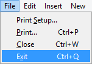
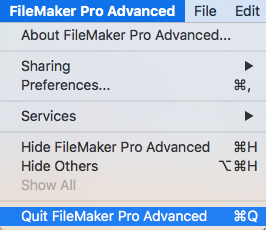

Closing FrameReady
Failure to correctly exit FrameReady and FileMaker Server can result in data loss or, worse, corrupted data files. Please learn how to close FrameReady and FileMaker Server correctly.
-
See also: Shutting down FileMaker Server
Exiting FrameReady on a Guest Computer
When closing FrameReady at the end of the day or when turning off your computer, always choose:
-
Windows: File > Exit

-
Macintosh: FileMaker Pro > Quit FileMaker Pro

-
The red X will not close the program!
-
The above steps ensure that all files are properly closed.
Important: Do not shut down your computer (or on a laptop, do not close the lid) while FrameReady is still running. Doing so may cause files to become damaged.
Other situations, such as power failures, flickers, brownouts, and power surges can damage files if FrameReady is operating. Install a surge protector and uninterruptible power supply on your FrameReady computer.
Important: Exit from your FrameReady program before activating any backup solutions. Do not point any live-synch backup solutions such as One Drive, Dropbox etc to your FrameReady folder as this will damage your data.
Tip: It is strongly recommended that you back up your files on a regular basis after closing FrameReady (i.e. not while FrameReady is open). A little prevention goes a long way toward security.
Tip: Consider using commercial surge protector and/or uninterruptible battery power supply.
© 2023 Adatasol, Inc.